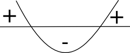

13. Diskriminant och antal rötter
Hur många rötter har ekvationen \(x^2+2x+1=0\)?
Lösning
Vi löser ekvationen med rotformeln:
\(\begin{array}{rcll} x^2+2x+1 &= &0 & \textrm{} \\ x &= & \dfrac{-2 \pm \sqrt{2^-4\cdot 1 \cdot 1}}{2\cdot 1} & = \dfrac{-2 \pm 0}{2} \textrm{} \\ x &= &-1 & \textrm{} \\ \end{array}\)
Vi har endast en rot, \(x=-1\).
Hur många rötter har ekvationen \(-x^2-2x=2\)?
Lösning
Vi löser ekvationen med rotformeln:
\(\begin{array}{lrcll} \textrm{} &-x^2-2x-2 &= &0 & \textrm{} \\ \textrm{} &x &= &\dfrac{-(-2) \pm \sqrt{(-2)^2 -4(-1)(-2)}}{2(-1)} &=\dfrac{2\pm \sqrt{-4}}{2} \textrm{} \\ \end{array}\)
Vi kan inte ta kvadratroten ur något negativt. Denna ekvation saknar rötter!
Värdet på diskriminanten, \(D=b^2-4ac\) anger antal lösningar för en andragradsekvation. Är diskriminanten
- positiv har ekvationen två lösningar,
- noll har ekvationen en lösning,
- negativ saknar ekvationen lösningar.
Testa här genom att ändra på värdet för variablerna a, b och c och märk hur diskriminantens värde och antal nollställen hänger ihop.
Exempel 1 För vilket värde på \(a\) har ekvationen \(x^2+ax=-1\) två rötter.
Lösning
Ekvationen ser ut som \(x^2+ax+1 = 0\).
Vi undersöker diskriminanten \(D=b^2-4ac > 0\).
Eftersom vi skall ha två rötter gäller att \(a^2-4\cdot 1 \cdot 1 > 0\).
\(\begin{array}{lrcll} \textrm{} &a^2-4 &> &0 & \textrm{} \\ \textrm{Löser ekvationen} &a^2-4 &= &0 & \textrm{} \\ \textrm{} &a^2 &= &4 & \textrm{} \\ \textrm{} &a &= &\pm 2 & \textrm{} \\ \end{array}\)
Vi skissar upp nollställena

Parabeln öppnar sig uppåt och är positiv då \(a<-2\) eller \(a>2\).
Exempel 2 För vilket värde på \(c\) har funktionen \(f(x)=x^2-2x+c\) endast positiva värden?
Lösning
Vi har en parabel som öppnar sig uppåt. Betyder att funktionen inte får skära x-axeln. Funktionen skall alltså sakna nollställen och diskriminanten skall vara negativ.
\(\begin{array}{lrcll} &D=(-2)^2-4\cdot 1 \cdot c &< &0 & \textrm{} \\ \textrm{} &4-4c &< &0 & \textrm{} \\ \textrm{} &-4c &< &-4 & \mid /-4 \textrm{ Negativt. Riktningen ändras!} \\ \textrm{} & c&> &1 & \textrm{} \\ \end{array}\)
Då \(c>1 \) får funktionen \(f\) endast positiva värden.
Uppgifter
- Hur många rötter har följande ekvationer? Använd dig av värdet för diskriminanten.
Påstående 0 rötter 1 rot 2 rötter \(5x^2 +2x -3 =0\) \(x-3=x^2\) \(2x^2+1 =0\) \(x^2+2x=-1\) Påstående 0 rötter 1 rot 2 rötter \(5x^2 +2x -3 =0\) X \(x-3=x^2\) X \(2x^2+1 =0\) X \(x^2+2x=-1\) X Kombinera rätt påstående med varandra.
Välj bland följande:
Diskriminanten är negativDiskriminanten har värdet nollDiskriminanten är positivParabeln skär x-axeln 2 gånger. Parabeln skär inte \(x\)-axeln. Parabeln tangerar \(x\)-axeln. Diskriminanten är positiv Parabeln skär x-axeln 2 gånger. Diskriminanten är negativ Parabeln skär inte \(x\)-axeln. Diskriminanten har värdet noll Parabeln tangerar \(x\)-axeln. - Hur många gånger skär följande funktioner \(x\)-axeln?
Påstående 0 gånger 1 gång, tangerar 2 gånger \(y=-4x^2+4x-1\) \(f(x)=-2x^2+x-3\) \(y=x^2-2\) Påstående 0 gånger 1 gång, tangerar 2 gånger \(y=-4x^2+4x-1\) X \(f(x)=-2x^2+x-3\) X \(y=x^2-2\) X - Bestäm det värde för \(a\) så att \(g(x)=3x^2-8x+a\) får endast positiva värden.
Se till att funktionen är ovanför \(x\)-axeln. Den skall inte få skära den.
Eftersom funktionen inte skall få skära \(x\)-axeln så betyder det att ekvationen \(3x^2-8x+a=0\) skall sakna lösningar eller ha en lösning. Det sker då diskriminanten är negativ eller lika med noll.
Alltså \(D=b^2-4ac \leq 0\) ger oss att \((-8)^2-4\cdot 3\cdot a \leq 0\) som sker då \(a\geq \dfrac{64}{12} = 5\dfrac{1}{3}\).
- För vilket värde på \(a\) gäller det att \(f(x)=x^2+ax+a\) tangerar \(x\)-axeln?
Vad betyder att funktionen tangerar \(x\)-axeln? Hur många rötter skall ekvationen \(x^2+ax+a=0\) ha?
Då funktionen tangerar \(x\)-axeln har diskriminanten \(D=b^2-4ac =0\).
Vi får att \(a^2-4\cdot 1\cdot a =0\) som har lösningarna \(a=0\) eller \(a=4\).
- För vilka värden på \(c\) gäller att \(g(x)=2x(1-2x)+c\) endast får negativa värden?
Utveckla först \(g(x)\) och arbeta dig sedan vidare med diskriminanten.
Eftersom \(g(x)=-4x^2+2x+c\) så öppnar sig parabeln neråt. Om \(g(x)\) skall ha negativa värden gäller att \(-4x^2+2x+c =0 \) skall sakna rötter.
Diskriminanten skall vara mindre än noll, alltså \(D=b^2-4ac = 2^2-4\cdot(-4)c < 0\) som sker då \(c<-\dfrac{1}{4}\).
- För vilka värden på \(a\) har ekvationen \(4x(a-x)=1\) i alla fall en rot?
Introducera en funktion och fundera hur många gånger funktionen skall skära \(x\)-axeln.
Vi har att \(f(x)=-4x^2+4ax-1\). Det som vi är intresserade att det i alla fall finns en lösning för ekvationen \(-4x^2+4ax-1=0\).
Det sker då \(D=b^2-4ac \geq 0\). Alltså \((4a)^2-4(-4)(-1)\geq 0\) som har lösningarna \(a\leq -1\) eller \(a\geq 1\).
- *För vilka värden på \(a\) har ekvationen \((a+1)x^2 + (a+1)x-1 =0\) endast en lösning?
Använd dig modigt av rotformeln, \( x=\dfrac{-b\pm\sqrt{b^2-4ac}}{2a} \) och arbeta dig därifrån vidare.
Endast en rot betyder att \(D=b^2-4ac=0\). Alltså \((a+1)^2-4(a+1)(-1)=0\) som har lösningarna \(a=-5\) och \(a=-1\).
\(a=-1\) duger inte för då får koefficienterna värdet 0. Alltså \(a=-5\).
- *Bestäm värdet för konstanten \(b\) så att \(4x^2+bx+2=0\) endast har en rot. Bilda dessa ekvationer och lös dem.
Då ekvationen skall ha en rot gäller att diskriminanten skall ha värdet noll. Vi får att \(D=b^2-4ac=b^2-4\cdot 4\cdot 2=0\) som har lösningen \(b=\pm 4\sqrt{2}\).
Då blir uttrycket \(4x^2 \pm4\sqrt{2} x +2 =0\) som vi löser som två ekvationer. Lösningarna är \(x=\pm \dfrac{\sqrt{2}}{2}\).
- *Låt \(f(x)=-x^2 +2x -2\) och \(g(x)=ax\). För vilka värden på \(a\) gäller det att kurvorna tangerar varandra?
Vad betyder att kurvorna tangerar varandra? Hur många gemensamma lösningar skall de ha? Arbeta dig vidare från ekvationen och undersök sedan diskriminanten.
Vi är intresserade av \(f(x)=g(x)\), alltså \(-x^2+2x-2=ax \Leftrightarrow -x^2+(2-a)x-2=0\). Denna ekvation skall ha en rot.
Alltså \(D=b^2-4ac = (2-a)^2-4(-1)(-2)=0\) som har rötterna \(a=2\pm 2\sqrt{2}\).